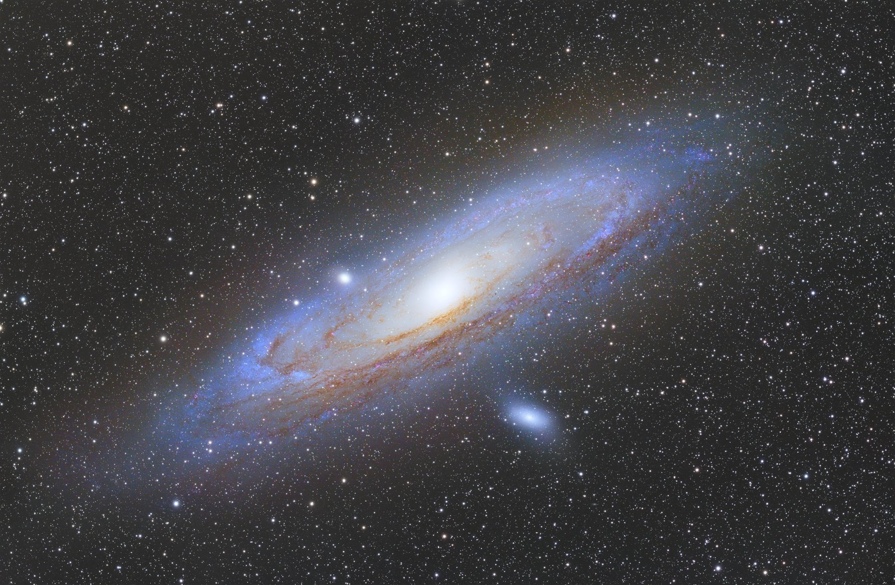
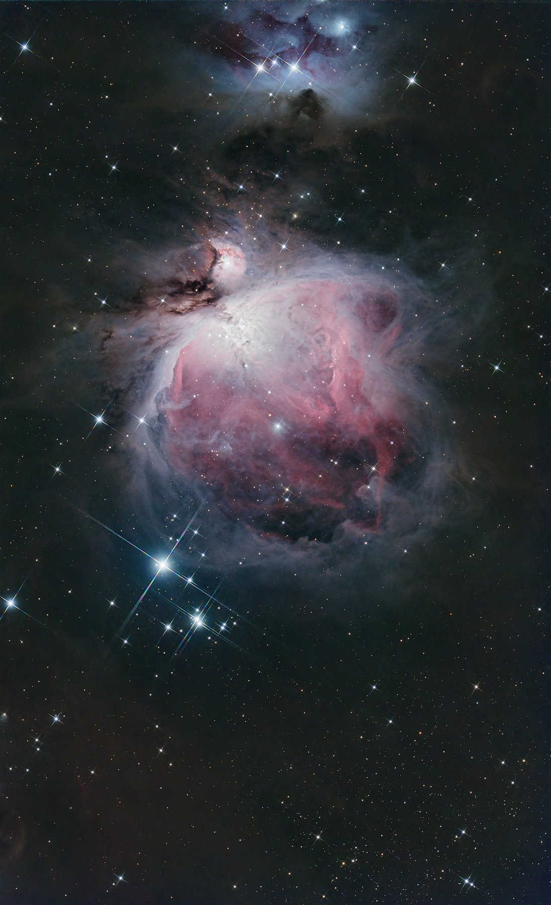
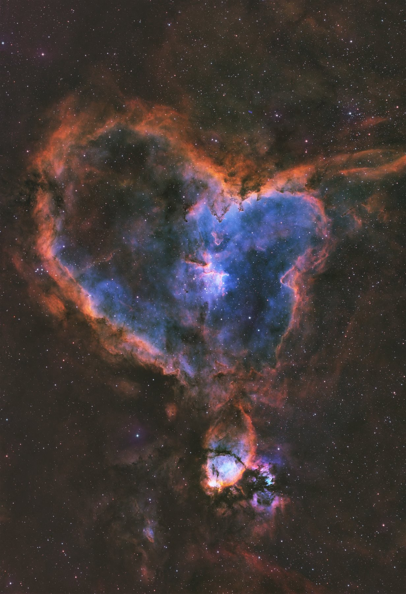
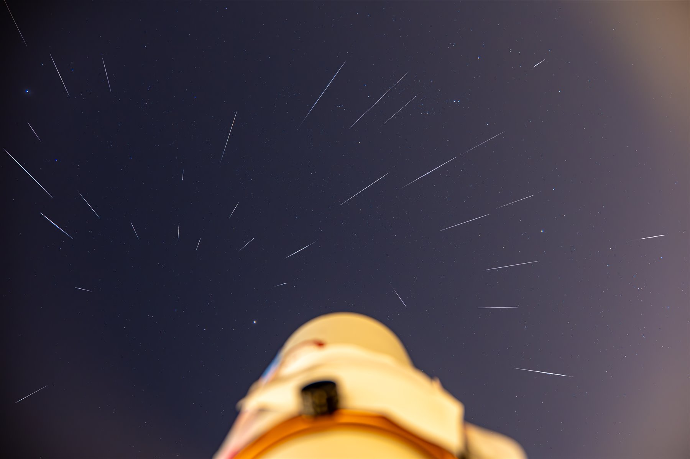
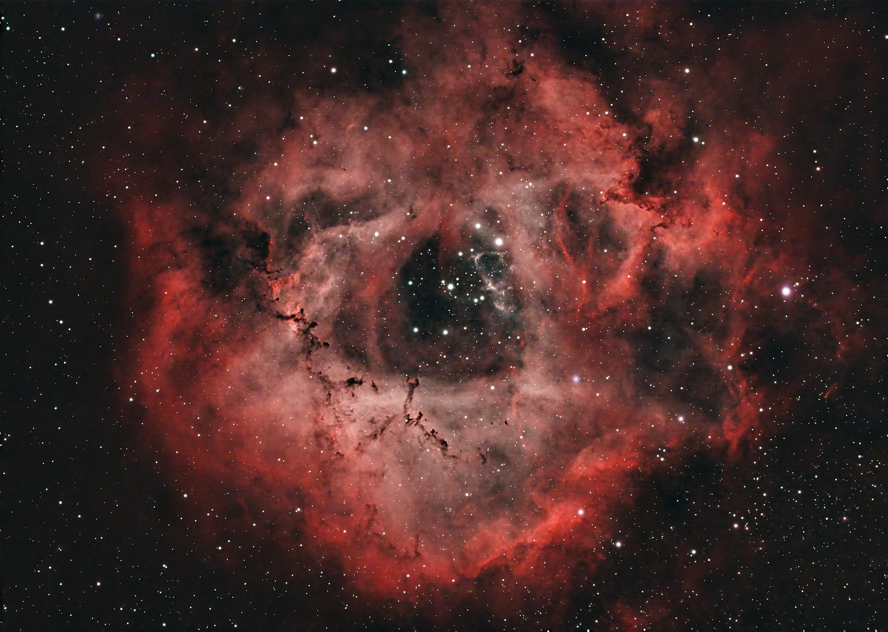
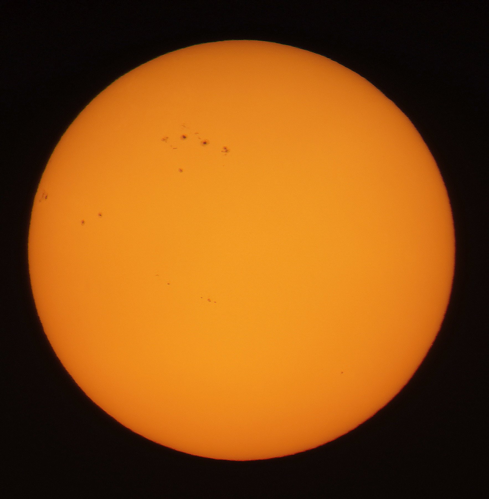
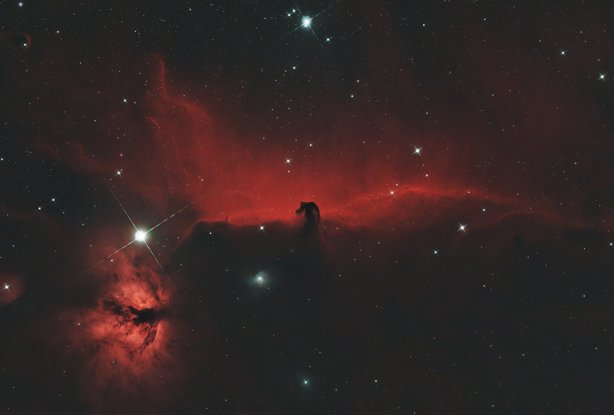
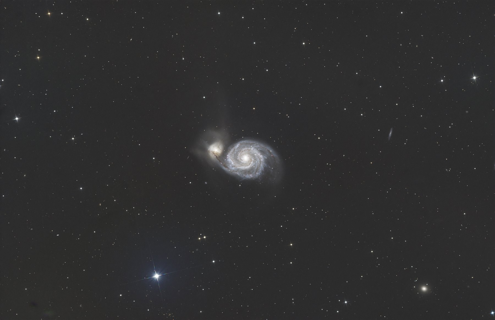
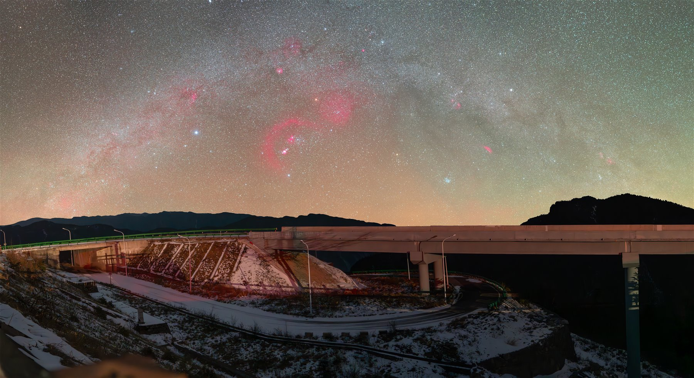
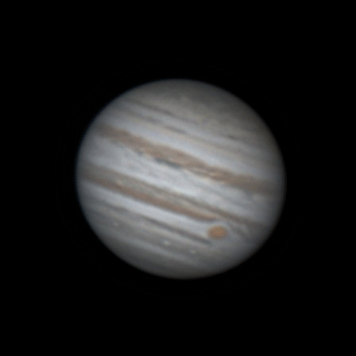

三个赛道，三项荣誉
- A1 星野相机赛道优秀奖 ·《坠入地球的银河子民》
- B1 天体·日月行星赛道三等奖 ·《月与血月》
- B2 天体·深空天体赛道优秀奖 ·《深空》
星空之下，
我们都是探索者。
刘舸洋
江南大学智能制造学院
2023级机器人工程专业
天见天文协会创始人、会长

2025年7月14日，天见天文协会正式成立，成为江南大学江阴霞客湾校区第一个“土生土长”的学生兴趣类社团。在周敏宁教授指导下，刘舸洋与同学们把对宇宙的好奇，变成了一群人的共同探索。
“我们希望能帮助更多喜爱星空的同学少走弯路，一起感受宇宙的浩瀚与神秘。”

从校园操场开始，近十次仰望与拍摄，让观测成为可以与同学共享的日常。自制月面地图也诞生于这里。











循此苦旅
以达天际
以下信息均根据相关网页全文整理。

主镜 锐星 103APO · 星特朗 C925HD
相机 QHY 268C
赤道仪 晴空 ST20R
导星 QHY OAG-M PRO · 图谱 290C
滤镜 宇隆 L-eXtreme · 锐星 D2 · XIMEI 红外截止
相机 松下 S5M2 · 海鸥 4A · 宾得 K100D
镜头 松下 70-300 · 松下 20-60 · 维卓仕 16mm F1.8
其他 DJI Mavic 2 Pro · DJI RS3 · Fotopro 脚架
从校园操场到沙漠星海，从第一次抬头到带更多人看见宇宙，探索仍在继续。